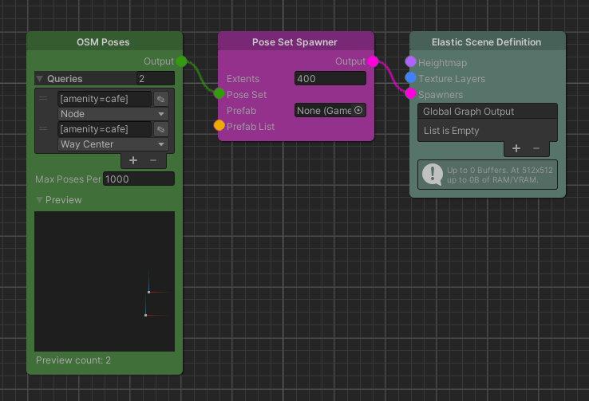

OSM Poses
Overview
The OSM Poses node provides the poses returned by an OSM query.

Detailed Explanation
This node allows to obtain information about the surrounding world based on OpenStreetMap data.
To find out how objects are tagged we can start by exploring the tag cloud or get more general information on tags here.
The queries in this node need to return positions.
For elements that return an area we can calculate the center by selecting Way Center.
Otherwise the returned type is a node, whose position can be used directly.
An in-depth look on this topic can be found in the How-To section on OSM Queries.
Parameters
Controls
| Name | Type | Description |
|---|---|---|
| Queries | OSM Query | Queries that return positions for this node. All Queries will be combined. |
| Max Poses Per Tile | int | The maximum number of poses this node will add to a tile. |
Use Cases
Spawning objects at certain real world positions

This example shows how we can use the real world information of cafes and use it to place objects in the game world. A quick lookup on cafes on the OpenStreetMap wiki page shows that even though most cafes are tagged as nodes, there is also the option to tag them using an area. This is why this example uses two queries: one with node and the other way center as the return value of the query.
Further Reading
- Overpass-Turbo for query exploration
- OpenStreetMap Wiki on Tags
- Overpass API Basics